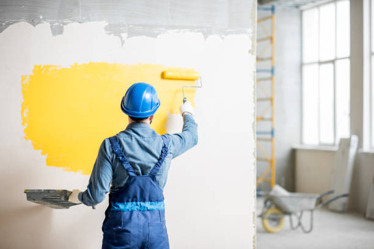

Reliable painting contractors in Alto Georgia delivering exceptional results for homes and businesses. Our services include detailed prep work and long-lasting finishes. Get your free consultation and elevate your space now!
Click Here To Call Us (877) 848-1711Are you searching for top-notch painting contractors in Alto Georgia ? Look no further! Our team of experienced professionals is dedicated to transforming your residential or commercial property with exceptional painting services. We specialize in delivering high-quality interior and exterior painting that enhances the aesthetic appeal and value of your property.
In Alto Georgia we offer a range of services including precise color consultations, meticulous surface preparation, and expert application of premium paints. Our commitment to detail and customer satisfaction ensures that every project is completed to the highest standard, leaving you with a beautifully refreshed space.
Whether you're updating the look of your home or giving your business a fresh, vibrant appearance, our skilled painters use the latest techniques and top-grade materials to achieve stunning results. We understand the importance of both functionality and aesthetics, which is why we focus on delivering durable and long-lasting finishes that stand the test of time.
At our painting company in Alto Georgia we pride ourselves on providing reliable, punctual, and professional service. From initial consultation to final touch-ups, our goal is to exceed your expectations and make your vision a reality. Contact us today for a free estimate and discover how we can elevate your space with our expert painting solutions.
Residential & commercial Painting contractors
Quality services at affordable prices
Immediate 24/ 7 emergency services


Maintaining the exterior paint of your home is crucial for both aesthetics and protection. At Painting Vikmanic, we see a range of issues affecting homeowners in Alto Georgia and understanding these problems can help you keep your property looking its best.
Peeling and Flaking
One of the most common issues is peeling and flaking paint. This problem often arises from improper surface preparation, moisture infiltration, or the use of inferior paint. When the paint fails to adhere properly or moisture gets trapped beneath the layers, it can lead to unsightly peeling and flaking. Ensuring a clean, dry surface and choosing high-quality paint can help prevent this issue.
Fading and Discoloration
Exposure to harsh sunlight and weather conditions can cause paint to fade over time. This fading not only affects the visual appeal of your home but also signals that the protective qualities of the paint are diminishing. In Alto Georgia where weather conditions can be unpredictable, opting for UV-resistant and weatherproof paints can extend the life of your exterior paint job.
Blistering
Blistering is characterized by bubbles forming on the paint surface, often due to excessive heat or painting over a moist surface. These blisters can eventually burst, leading to further peeling and damage. To avoid blistering, it’s essential to paint in suitable weather conditions and ensure the surface is completely dry before application.
Mold and Mildew Growth
In humid environments like those in Alto Georgia mold and mildew can develop on exterior walls, particularly in shaded or damp areas. This not only affects the appearance but can also lead to more serious issues. Using mold-resistant paints and maintaining proper ventilation can help combat this problem.
For a flawless exterior paint job that stands up to the elements, trust Painting Vikmanic. Our expert team in Alto Georgia is dedicated to delivering high-quality results that enhance both the beauty and durability of your home. Contact us today for professional painting services!
Residential & commercial Painting contractors
Quality services at affordable prices
Immediate 24/ 7 emergency services
Selecting the right colors can be overwhelming, which is where our color consultation services come in. Our experienced color consultants work closely with you to understand your vision and lifestyle to recommend colors that enhance your property’s appeal. We take into account the mood you want to evoke, lighting, and architectural features, creating a personalized palette that works well for each space. Our commitment to providing expert guidance ensures that your paint choices are reflective of your style while harmonizing with the existing surroundings. Let us help you make informed decisions that will leave you thrilled with your choices.

Revitalize your interiors with our painting and wallpapering services . Our experienced team specializes in providing a seamless blend of both techniques, ensuring that your space is both stylish and inviting. We offer a wide selection of high-quality paints and wallpapers that can be tailored to fit any decor.
From traditional patterns to modern textures, our wallpaper options provide endless possibilities for creativity, while our expert painters ensure that every corner of your room reflects perfection. Our approach includes meticulous preparation, ensuring a flawless application that transforms your home into a work of art.

Selecting the right color palette can be overwhelming, but our color consultation services simplify the process. Our team of professional color consultants understands the psychology of color and how it can affect the mood and ambience of any space.
During a consultation, we analyze your space, discuss your preferences, and help you choose colors that align with your vision and lifestyle while ensuring cohesion throughout your property. We provide samples and expert guidance, saving you time and avoiding costly mistakes.
Why opt for our color consultation services? Our experienced consultants are passionate about color theory and committed to helping you achieve your dream environment. We combine practical advice with a wealth of knowledge to give you confidence in your color choices.
Transform your space with our color consultation services in Alto Georgia . Let us guide you in making your home a true reflection of your personality. Contact us today!

Faux painting offers unique aesthetic possibilities to enhance the character of your spaces. Our faux painting services utilize creative techniques to mimic the look of various materials, such as stone, wood, or marble, giving your rooms a luxurious feel without the hefty price tag.
Why should you opt for faux painting? Our skilled artists combine technical acumen with creativity to deliver stunning faux finishes that serve as the centerpiece of any room. From subtle textures to striking visual effects, we tailor our approach to perfectly suit your taste and the ambiance of your home. Choose faux painting services to add an extraordinary touch of elegance to your interiors!

Updating your kitchen or bathroom cabinets can completely reinvigorate your space without the need for a full remodel. Our cabinet painting services offer a cost-effective way to refresh your rooms. We utilize specialized techniques to achieve a factory-like finish that is both durable and beautiful.
What sets us apart in cabinet painting? Our attention to detail ensures that every cabinet door and drawer is properly prepared, contributing to a flawless finish. We guide you through the color selection process to ensure that your cabinets complement your overall theme. For standout cabinet painting services in Alto Georgia we’re ready to transform your cabinetry into a stunning focal point!
Often overlooked, the ceiling plays a critical role in the overall aesthetics of a space. Our ceiling painting contractors specialize in enhancing this area through precise and careful application, ensuring no detail is missed for a smooth and even finish.
Why are we the best choice for ceiling painting? Our expertise guarantees a neat and professional result that elevates the entire room. We are dedicated to quality and customer satisfaction—efforts that shine through in our work. If you want to revitalize your overhead spaces, choose our ceiling painting contractors in Alto Georgia for a breath of fresh air!

Breathe new life into your outdoor spaces with our deck painting contractors in Alto Georgia . A well-maintained deck enhances your home’s curb appeal and provides an inviting area for relaxation and entertainment. Our deck painting services focus on protection, restoration, and aesthetic enhancement.
Our experienced contractors begin each project by assessing your deck’s condition and recommending the best painting solutions. We utilize high-quality, weather-resistant paints that safeguard your deck from the elements, ensuring longevity and durability.
Why work with us? We prioritize our clients’ satisfaction, taking the time to prepare surfaces properly for an even application and beautiful finish. Our friendly team is dedicated to transforming your deck into the outdoor oasis you’ve always wanted.
In Alto Georgia trust our deck painting contractors to elevate your outdoor living experience. Contact us today for a free quote and start planning your deck transformation!

Finding a reliable painting company near me is now easier than ever with our services . We specialize in providing professionalism and quality that exceeds expectations while ensuring that all local project needs are met. Our commitment to community service means we focus on personalized attention to every project, making sure your unique vision becomes reality.
We offer a wide range of painting services that cater to residential and commercial needs. Our skilled workers take pride in their craft and are dedicated to ensuring your satisfaction. By choosing us, you're choosing a local company that values community relationships and strives for excellence in every job.
Years Experience
Expert Technicians
Satisfied Clients
Compleate Projects
Why Choose Painting Vikmanic in Alto Georgia ?
At Painting Vikmanic, we understand that choosing the right painting contractor is crucial to transforming your space. That’s why we are dedicated to providing exceptional painting services across all cities in Alto Georgia . Our team of highly skilled professionals brings a wealth of experience and a passion for excellence to every project, ensuring your vision becomes a reality.
Why choose us? Our commitment to quality craftsmanship and customer satisfaction sets us apart. We use only the highest-quality materials and advanced techniques to deliver stunning, long-lasting results. Whether you’re looking to refresh your home’s interior, enhance your commercial property, or undertake a large-scale renovation, Painting Vikmanic has the expertise and resources to exceed your expectations.
Our services include everything from meticulous surface preparation to the application of beautiful finishes. We handle every aspect of your painting project with precision and care, ensuring a seamless and stress-free experience. Our attention to detail and dedication to excellence mean that we don’t just paint walls—we create enduring works of art.
Customer satisfaction is at the core of what we do. We offer free consultations and detailed estimates to ensure transparency and align with your budget. Our friendly and professional team is always ready to answer your questions and provide guidance, making the process as smooth and enjoyable as possible.
Choose Painting Vikmanic in Alto Georgia for your next painting project and experience the difference that expert craftsmanship and exceptional service can make. Contact us today to get started!
When it comes to transforming your living space, choosing the right house painting services can make all the difference. At our company, we specialize in providing high-quality house painting services that not only enhance the beauty of your home but also protect it from the elements. Our team of professional painters is skilled in both interior and exterior painting, ensuring that every inch of your home looks stunning. We understand that your home is a reflection of your style, and we are dedicated to helping you achieve the look you desire.
Why should you choose us? Our commitment to excellence, attention to detail, and customer satisfaction set us apart from the competition. We use only the highest quality paints and materials, ensuring a long-lasting finish that withstands the test of time. Our painters are experienced, licensed, and insured, giving you peace of mind while we work on your home. We also offer free color consultations to help you select the perfect shades that complement your décor.
Whether you need a single room painted or your entire home, our house painting services are tailored to meet your specific needs. We pride ourselves on our professionalism, punctuality, and cleanliness, ensuring that your home remains tidy throughout the entire process. Trust us to deliver exceptional results that make your home truly shine.
The exterior of your home is your first line of defense against the elements, and at our company, we offer expert exterior painting services that enhance curb appeal while providing lasting protection. Our skilled exterior painting contractors understand the local climate and employ high-quality, weather-resistant paints designed to withstand the test of time.
With a keen eye for detail, we not only paint but also prepare your surfaces, ensuring that the final finish is flawless. From protective coatings to vibrant colors, we have the expertise to bring your vision to life. We prioritize customer satisfaction, using eco-friendly practices whenever possible to ensure your home painting project is as sustainable as it is beautiful. Trust our exterior painting contractors, and watch your home transform from ordinary to extraordinary.
Transform your interiors with our specialized interior house painters, who understand that your home reflects your personality and lifestyle. We are dedicated to creating a comfortable and stylish living environment tailored just for you. Our process begins with a thorough consultation where we discuss your visions, color preferences, and the atmosphere you want to achieve. Using only the finest quality paints, we ensure smooth and even finishes that breathe new life into your interiors.
What sets us apart? Our attention to detail and commitment to cleanliness make every project a joy for our clients. We take the time to protect your flooring and furnishings, so you can relax while we work. Whether it’s a cozy bedroom, an elegant living room, or a vibrant nursery, our experienced painters understand the nuances of interior design and will help you make your space truly yours. Choose us for interior house painting and experience a transformation that combines artistry with professionalism!
As one of the most trusted local painting companies, we have been serving the Alto Georgia area with dependable and quality painting services. Local knowledge gives us a unique advantage in understanding our clients' needs as well as the architectural styles prevalent in the community. Our local roots run deep, and this connection drives our commitment to delivering outstanding results.
What makes us different from other local painting companies? Our team is made up of friendly, professional painters who treat every client as part of our extended family. We pride ourselves on our transparent pricing, reliability, and customer support, ensuring you're informed and satisfied from start to finish. Whether it’s residential or commercial projects, our team is ready to bring your vision to life with a splash of color. Choose us as your local painting company where community values meet exceptional service!
Having a well-painted commercial space reflects professionalism and attention to detail. Our commercial painting services are designed to meet the unique requirements of businesses. We understand that time is money, so we work diligently to complete projects with minimal disruption to your operations.
Our experienced team can handle a variety of commercial properties, including offices, restaurants, and retail spaces. We offer flexible scheduling, evening and weekend services to accommodate your business's needs. Our extensive experience means we can tackle any project, big or small, ensuring that your color choices, finishes, and overall aesthetics align with your brand.
Choosing our commercial painting services means choosing reliability and quality. We use durable paints that endure high-traffic environments while maintaining their visual appeal. Additionally, our painters are trained to follow safety regulations, ensuring a safe working environment.
, let our professional commercial painters revitalize your business space, making it more inviting for your clients and employees alike.
Quality doesn’t have to come at a high price. Our affordable house painters in Alto Georgia are committed to making premium painting services accessible to everyone. We believe everyone deserves a beautiful home without having to break the bank. Our team works efficiently to ensure your project is completed on time and within budget while maintaining the highest standards of quality. We understand the importance of value, which is why we offer free estimates and work with you to find the best solutions that fit your financial needs. Experience reliability and affordability with our painting services that don't sacrifice quality for cost.
Finding qualified, professional painters can often be a daunting task. However, if you're searching for professional painters near me your search ends here. Our team consists of highly trained professionals who bring years of experience and expertise right to your doorstep. When you choose us, you're selecting a team that prides itself on delivering quality workmanship that meets your individual needs.
What makes our team the best? Our reputation for reliability, attention to detail, and exceptional customer service sets us apart from the competition. Our services are versatile, allowing us to handle both small residential projects and large commercial jobs with the same level of care and craftsmanship. We're dedicated to delivering beautiful results that you can enjoy for years to come. Choose us for professional painters and rest assured knowing your project is in skilled hands!
Finding quality painting services that are also affordable can seem challenging, but our affordable house painters in Alto Georgia deliver both without compromising quality. We believe everyone deserves a beautiful home, and we do our best to provide competitive pricing options for our clients.
Our focus is on delivering value for your investment. We use high-quality paints and materials to ensure durability and aesthetic appeal. While our prices are competitive, our standards never waver, which is why we are the go-to choice for budget-conscious homeowners.
With a team of expert painters, we provide honest quotes and work efficiently to minimize costs and time. We are upfront about any additional charges and always strive to provide clear and detailed proposals that help you understand what to expect from our services.
Trust our affordable house painters in Alto Georgia to give your home the facelift it deserves without breaking the bank. We’re ready to collaborate with you on your painting project today!
When seeking the best painting contractors quality and reliability are paramount. Our team prides itself on a blend of exceptional craftsmanship, outstanding customer service, and extensive industry knowledge that sets us apart from the crowd. We understand that our reputation hinges on each project, which is why we consistently strive for excellence.
Our commitment to using only the best materials allows us to deliver a finished product that not only looks great but also lasts. We focus on the details — from surface preparation to the final inspection — ensuring everything meets your standards and ours. Choose us, and you'll be guaranteed a service that earns your trust and satisfaction with every brushstroke.
If you are looking for reliable painters for hire in Alto Georgia you’ve come to the right place. Our team emphasizes professionalism, punctuality, and superior craftsmanship. We cater to all kinds of painting projects, whether residential or commercial, no job is too big or too small for us. Our painters are screened, insured, and highly trained to ensure your project is completed without concern.
Why hire our team? We provide personalized service tailored to your needs. Our painters work with you closely to understand your vision, answer your questions, and keep you updated throughout the process. Experience peace of mind by hiring us as your painters for hire and enjoy beautiful results that make your spaces shine!
Industrial facilities have unique requirements that demand expert handling, and our industrial painting services in Alto Georgia are designed to meet those needs. We specialize in large-scale projects that require not only skilled craftsmanship but also a deep understanding of the materials and techniques suitable for challenging environments.
Our team is equipped to handle heavy machinery and structural elements, ensuring a durable finish that protects against wear and tear. We offer specialized coatings that comply with safety regulations and enhance the aesthetic value of your facility. We're dedicated to working around your schedule to ensure minimal disruption to your industrial operations, making us the preferred choice .
Refreshing your apartment shouldn’t be a hassle. Our apartment painting services are designed to help residents create beautiful living spaces easily and affordably. Whether preparing for a move or wanting to personalize your environment, our team of expert painters is available to assist you.
We understand that living in an apartment comes with unique challenges, such as working with limited space and adhering to property management guidelines. Our professional painters are experienced in navigating these considerations, ensuring that your apartment looks fantastic without violating any policies.
Why choose our apartment painting services? We offer fast, efficient, and comprehensive painting solutions with minimal disruption to your daily life. Our quality materials and meticulous approach ensure that every room reflects your personality and style.
, we pride ourselves on our affordability and commitment to excellence. Allow us to transform your apartment into a beautiful and inviting sanctuary today!
A well-painted office can significantly impact employee morale and productivity. Our office painting services in Alto Georgia are crafted to create a professional yet inviting environment that reflects your brand and inspires your team. We understand the intricacies involved in commercial spaces, such as the need for minimal disruption during business hours.
Our experienced painters work around your schedule to provide services efficiently and effectively. Utilizing high-quality commercial-grade paints ensures that the finish can withstand daily wear while looking immaculate. With a keen eye for detail and a commitment to excellence, we ensure your office becomes a space where creativity thrives.
Our interior decorating services go beyond mere painting; we also consider the entire aesthetic experience of the space. Collaborating with our experts will help you design a cohesive look complemented by the right colors, textures, and furnishings. We understand that the interplay between color and decor plays a significant role in creating a welcoming environment. Our team is enthusiastic about transforming spaces by tying together colors and designs that truly represent your personality and style. Trust us to create a harmonious atmosphere that feels welcoming while maximizing your space's potential.
When it comes to wall painting, the precision and quality delivered by wall painting contractors can make all the difference. Our professional team in Alto Georgia specializes in various styles, from traditional to contemporary, ensuring your walls elevate your interiors beautifully. We pride ourselves on our meticulous surface preparation, which is essential for a flawless finish.
Our wall painting contractors are adept in various techniques and finishes, allowing you to choose a look that suits your personal aesthetic. Whether you're painting a single accent wall or the entire residence, our attention to detail guarantees stunning results that leave a lasting impression.
Interior decorating goes beyond paint; it’s about creating a cohesive, inviting space that reflects your personality. Our interior decorating services help you select the right colors, patterns, and accessories to achieve your desired look. We understand that every space has its unique features, and we tailor our services accordingly.
Why partner with us? Our team of decorators brings passion and creativity to every project, delivering spaces that amaze and inspire. We work collaboratively, ensuring that your vision becomes a reality. From concept to completion, we are committed to excellence in decorating. Choose us for interior decorating services and transform your house into a home!
A well-maintained fence adds charm to your property, and our fence painting services help protect and beautify your outdoor spaces. Our expert team understands the different materials and finishes that fences require, whether wood, vinyl, or metal. Using high-quality weather-resistant paints ensures that your fence not only looks great but also withstands the elements.
Our preparation process is thorough, including cleaning, repairs, and priming, guaranteeing optimal adhesion and longevity of the finish. We consider your aesthetic preferences when selecting colors and finishes, ensuring that your fence complements your home and landscaping beautifully.
Paint peeling or flaking is a common issue that homeowners in Alto Georgia may face. At Painting Vikmanic, we understand the frustration this problem can cause and are here to help you identify and address the root causes effectively.
Moisture Infiltration
Moisture infiltration is one of the leading causes of paint peeling. When water penetrates behind the paint, it can weaken the adhesion and cause the paint to lift off. This is particularly problematic in areas with high humidity or where water leaks are present, such as bathrooms or exterior walls exposed to rain.
Improper Surface Preparation
Inadequate surface preparation is another major culprit. For paint to adhere properly, the surface must be thoroughly cleaned, dry, and free of debris or old paint. Failing to prepare the surface correctly can result in poor adhesion and lead to peeling or flaking paint over time.
Low-Quality Paint
The use of low-quality paint can significantly contribute to peeling issues. Paints that lack durability and flexibility are more likely to fail. Choosing high-quality, durable paint products can reduce the risk of peeling and ensure a longer-lasting finish.
Application Problems
Painting under unsuitable conditions or applying paint too thickly can also lead to peeling. Extreme temperatures, high humidity, or overly thick layers can prevent proper curing and adhesion, resulting in paint failure.
To avoid paint peeling or flaking, focus on proper surface preparation, invest in high-quality paint, and ensure optimal application conditions. For expert advice and reliable painting services in Alto Georgia trust Painting Vikmanic to keep your home looking its best. Contact us today for professional assistance!
Alto is a town in Banks and Habersham counties in the U.S. state of Georgia. As of the 2010 census, the town had a population of 1,172, up from 876 at the 2000 census.
We recommend clearing furniture and covering belongings to prepare for painting. However, Painting Vikmani provides complete preparation services, including covering floors and furniture .
Yes, Painting Vikmani offers eco-friendly, low-VOC paints in Alto Georgia which are safer for your family and the environment while providing excellent coverage and durability.
The time it takes to paint a house depends on factors like the size of the home and the condition of the walls. On average, Painting Vikmani can complete a project in 3-7 days.
Painting Vikmani ensures quality by using premium materials and employing experienced painters. We also follow a thorough preparation and finishing process to guarantee top-notch results in Alto Georgia .
Yes, Painting Vikmani provides pressure washing services to prepare exterior surfaces, ensuring that the paint adheres properly for a smooth and lasting finish.
Yes, Painting Vikmani provides texture painting services in Alto Georgia including faux finishes, textured walls, and other decorative painting techniques to enhance your home’s aesthetic.
The best season for painting is typically spring or fall when the weather is moderate. However, Painting Vikmani offers year-round painting services, adjusting techniques based on conditions.
Yes, Painting Vikmani specializes in painting exterior surfaces including homes, garages, fences, and decks, ensuring a weather-resistant finish.
Hiring Painting Vikmani is easy! Simply contact us for a consultation and free estimate, and we’ll guide you through the entire process, from color selection to project completion.
To book a painting service with Painting Vikmani simply give us a call or fill out the online form on our website. We’ll schedule a consultation and estimate at your convenience.
While it’s usually best to remove wallpaper, Painting Vikmani can paint over it if the wallpaper is secure and in good condition. We’ll assess and recommend the best option.
Yes, Painting Vikmani offers drywall repair services to ensure your walls are smooth and ready for a flawless paint finish.
At Painting Vikmani, we take pride in being one of the best house painters . We offer top-notch residential painting services with experienced painters who deliver flawless results.
Yes, Painting Vikmani has the tools and expertise to paint high ceilings and hard-to-reach areas in Alto Georgia ensuring an even and professional finish.
No, Painting Vikmani provides transparent pricing with no hidden costs . Your estimate will include all the details so there are no surprises.
At Painting Vikmani, we pride ourselves on attention to detail, professional service, and long-lasting results. Our customer-focused approach sets us apart from other painters .
Painting Vikmani can help you choose the right paint finish for your project in Alto Georgia whether you need a matte, satin, or glossy look based on the surface and style you want.
At Painting Vikmani, customer satisfaction is our priority. If you are not happy with the result, contact us, and we will work to resolve the issue promptly .
Yes, Painting Vikmani offers high-quality interior painting services . We specialize in transforming living spaces with precise, clean, and professional finishes.
Yes, Painting Vikmani offers expert commercial painting services for businesses, offices, and retail spaces, ensuring minimal disruption to your operations.
At Painting Vikmani, we use only premium-quality, eco-friendly paints for residential projects . Our products ensure long-lasting finishes and vibrant colors.
It is not necessary for you to be home during the project. Painting Vikmani’s team is professional and trustworthy, and we can complete the job whether you're present or not.
Yes, Painting Vikmani provides free estimates for both residential and commercial painting projects . Contact us today for a detailed quote.
The cost of painting a house depends on the size of the home, the type of paint, and the extent of the project. Contact Painting Vikmani for a free estimate tailored to your specific needs.
On average, it’s recommended to repaint every 5-7 years, but this depends on factors like exposure to elements. Painting Vikmani can assess your home in Alto Georgia and suggest the best schedule.
To maintain your painted walls, gently clean with a damp cloth and avoid harsh chemicals. Painting Vikmani in Alto Georgia uses durable paints that can withstand regular cleaning.
Yes, Painting Vikmani is fully licensed and insured in Alto Georgia ensuring that all our painting projects meet safety and quality standards.
Yes, Painting Vikmani offers warranties for all our painting services in Alto Georgia ensuring that you are fully satisfied with our work.
Yes, Painting Vikmani offers cabinet painting services providing a cost-effective way to update your kitchen’s look without a full renovation.
Absolutely! Painting Vikmani offers color consultation services to help you choose the perfect shades that complement your home's aesthetic.
Painting Vikmanic provided excellent service for our restaurant in Alto Georgia . The quality of their work was exceptional, and they completed the project efficiently. Our establishment looks fantastic, and we are very happy with the results. Thank you for a great job!
Profession
Our experience with Painting Vikmanic in Alto Georgia was wonderful. The painters were knowledgeable, reliable, and the quality of their work was superb. The finished result is stunning, and we are very satisfied with their service!
Profession
Our experience with Painting Vikmanic in Alto Georgia was fantastic. The painters were professional, and the painting job was of the highest quality. The team’s craftsmanship truly enhanced the look of our home. We couldn’t be happier with the outcome!
Profession